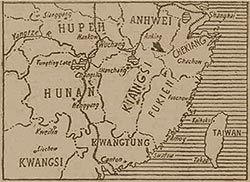

|
j
a v a s c r i p t |
July 4, 1944
There were plenty of "markers" around to celebrate American Independence Day, specially in the Santa Ana district — crossed Filipino and American flags with: "July 4, 1944." A large poster slapped on a streetcar so incensed the Japanese that they suspended the service on that line for a while. Best of all was a four-page newspaper — "Philippines' Herald" — with the crossed flags, date and excerpts of the Philippine Constitution inside. Many stayed home expecting something to happen. Nothing did.

Kwangtung-Hunan Railway
Tribune: "Japs driving northward along Canton rail line.... Drive is in concert with Nippon operations in Hunan area." Tokyo expects to control the Hankow-Canton line soon. "Omiya [Guam] repulses [3] enemy cruisers, [80] planes." Saipan: "Though heavily outnumbered, our garrison are successfully checking the invaders ... with the enemy heavily assaulting our positions under cover of heavy bombing and shelling which continue night and day." Commentator says Daihon-ei's figures are conservative, so the 8,752 casualties in Saipan must really be ... 40,000! From a Japanese base in China: "Paralyzed with fear, the pilot of a lone enemy P-40 bearing the Chungking insignia attempted to land his plane on our airfield on the night of June 24 and crashed." He was apparently "scared out of his wits by our fierce attacks." Or he simply messed up a forced landing. At 2020 two short whistles brought everyone on our side of the street out — a practice call. We chatted, joked and jeered at the latecomers until someone said: "Gosh! We'd better stop this — it's too much like a July 4 celebration." Other news: Rice has touched a new high — P900 a sack; sugar is P1,400 a sack. Minsk has fallen — Germans are rushing out of the gap like wildfire. |
|
|
|
|